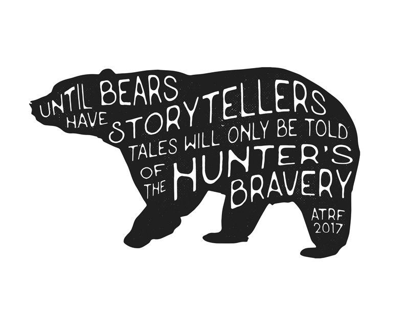

As the Raven Flies poster
Designed for As the Raven Flies’ Kickstarter campaign, created with Adobe Photoshop CC · January 2017
Graphic designer experienced in all things nonprofit. Specialist in promotional materials and social media marketing. Hero at responding to emails.
Designed for As the Raven Flies’ Kickstarter campaign, created with Adobe Photoshop CC · January 2017
Designed for Chairs and Tables’ project As the Raven Flies, created with Adobe Photoshop CC · August 2014

Commissioned by The Awesome Foundation, created with Adobe Photoshop CS6 · February 2016
Designed as part of a poster series for TEDxQueensU, created with Adobe Photoshop CS6 · February 2015

Designed for TEDxQueensU, created with Adobe Photoshop CS6 · November 2014
Designed for Chairs and Tables, created with Adobe Photoshop CC · August 2014

Designed for Vanhawks’ Kickstarter campaign, created with Adobe Photoshop CS6 · April 2014

Designed as part of a poster series for Camp Arowhon, created with Adobe Photoshop CS6 · December 2013

Designed for Ontario Youth Parliament, created with Mac Pages · October 2013
Designed for Ontario Youth Parliament, created with Mac Pages · September 2013